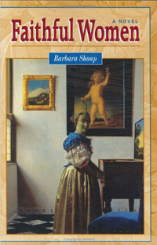

Faithful Women
 Evie Slade has long ago put her unhappy Indiana childhood behind her and created a quiet, solitary life for herself in New York City. Talented and introspective, as a conservator specializing in the art of seventeenth-century Holland, she has devoted herself to restoring to perfection worlds created in paint.
Now middle-aged and vaguely discontented with her life, Evie gladly accepts a commission to repair a slashed Vermeer at the National Gallery in London. She anticipated being energized by the change of scene and returning to her old life renewed; instead, an affair with archaeologist Cliff Mills and the unexpected arrival of her troubled niece Jenny shatter her serene pursuit of the work she loves.
But most of all it is England—England, where her father and stepmother met and fell in love during World War II, where every field speaks of a time dating back to the Romans and beyond—that sends her reeling backwards, to confront and resolve the troubling elements of her past.
The action of the novel unfolds itself beneath the gaze of Vermeer's "A Lady Standing at the Virginal," whose ever-growing presence in Evie's life heightens her own sense of discovery about herself, her family, and her deepening relationship with Cliff.
BARBARA'S BLOG

Read thoughts on books, authorship, teaching, and life on Barbara's blog.
MORE WORK

Browse Barbara's books or read her essays.
CONTACT
Donec id elit non mi porta gravida at eget metus. Fusce dapibus, tellus ac cursus commodo, tortor mauris condimentum nibh, ut fermentum massa justo sit amet risus. Etiam porta sem malesuada magna mollis euismod. Donec sed odio dui.
© Barbara Shoup 2012